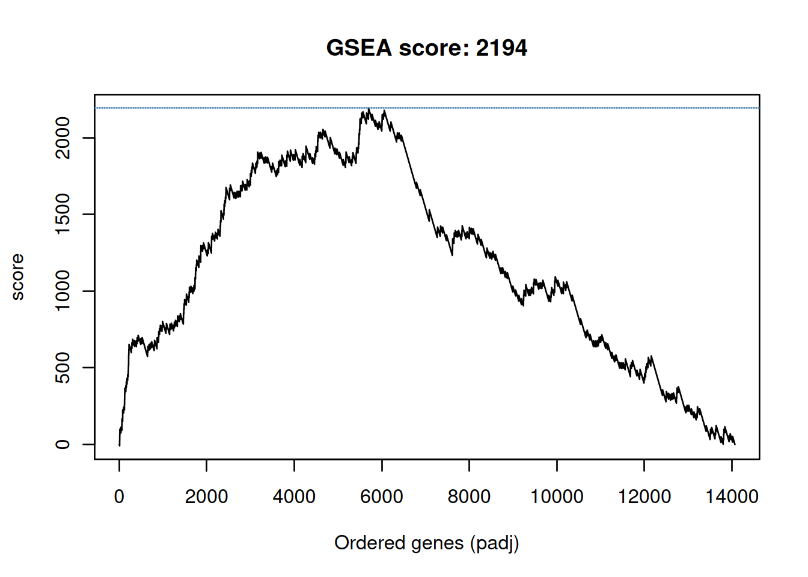
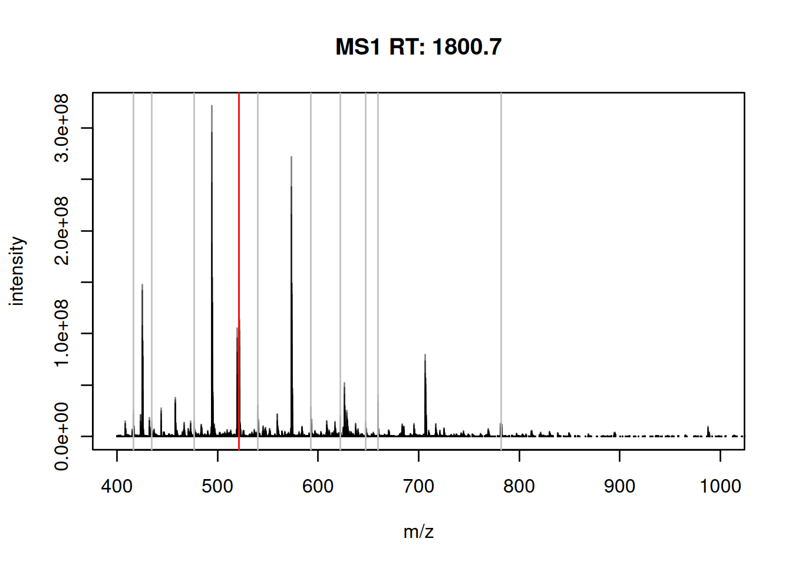

Chapter 6 Enrichment analyses
Motivation: at the end of this chapter, the students will be able to address the following points:
- What are the next steps after a differential expression analysis?
- Why are enrichment analyses useful?
- Understanding over representation analyses.
- Understanding a gene set enrichment analysis.
- Application of the clusterProfiler package.
6.1 Introduction
Differential expression analysis is univariate - each gene is tested on its own. This probably doesn’t reflect the underlying biology - genes work in conjunction, not in isolation. One wouldn’t expect that the effect of a drug, or a mutation, … would lead to the perturbation of a single gene expression.
The univariate approach expects (or tests for) significant changes in single genes. Moderate effects in many (related) genes cannot, by definition be identified as statistically significant, even it such an effect may be biologically more plausible that one of a few large ones.
The goal of an enrichment analysis is to test for a group of related genes, called gene sets, and test whether the genes within these sets are enriched for differentially expression.
6.2 Gene sets
While nothing would stop a user to create their own gene sets, the sets that are generally used stem from community-maintained resources.
6.2.1 Gene Ontology (GO)
The Gene Ontology (Ashburner et al. 2000Ashburner, M, C A Ball, J A Blake, D Botstein, H Butler, J M Cherry, A P Davis, et al. 2000. “Gene Ontology: Tool for the Unification of Biology. The Gene Ontology Consortium.” Nat Genet 25 (1): 25–29. https://doi.org/10.1038/75556.) defines GO terms. These terms are based on a controlled vocabulary (to resuse the same words in a consistent way) and relations12 that define the directed links between terms. These relations define a hierarchy between GO terms: all term can be represented as a (direct acyclic) graph (DAG). There exist thus very general and very specific terms.
These terms are classed into three categories, called namespaces:
- Molecular Function (MF): molecular activities of gene products
- Cellular Component (CC): where gene products are active
- Biological Process (BP): pathways and larger processes made up of the activities of multiple gene products
Here’s an example of GO term GO:0007155, that describes cell adhesion.
A Term from the GO ontology: GO:0007155
Label: cell adhesion
The attachment of a cell, either to another cell or to an underlying
substrate such as the extracellular matrix, via cell adhesion
molecules.If you look at the GO term GO:0007155 entry on the Gene Ontology
page, you can
find more details and, if you scroll down, example genes that are
annotated with that term.
Figure 6.1: Gene ontology entry for the GO term for cell adhesion.

The whole Gene Ontology is can be accessed in R with the GO.db package.
In the code chunk below, we query the GO.db package through the
org.Hs.eg.db interface. This org.db-type of packages for Homo
sapiens enables to perform various queries for human genes, such as
retrieving all gene symbols and ENTREZ identifiers (the columns
below) that are annotated with a GO term (the keys below) of
interest.
The GO term of interest here is focal adhesion:
A cell-substrate junction that anchors the cell to the extracellular
matrix and that forms a point of termination of actin filaments. In
insects focal adhesion has also been referred to as hemi-adherens
junction (HAJ).library("GO.db")
library("org.Hs.eg.db")
GO_0005925 <- AnnotationDbi::select(org.Hs.eg.db,
keys = "GO:0005925",
columns = c("ENTREZID", "SYMBOL"),
keytype = "GO") %>%
as_tibble %>%
filter(!duplicated(ENTREZID))## 'select()' returned 1:many mapping between keys and columns## # A tibble: 422 × 5
## GO EVIDENCE ONTOLOGY ENTREZID SYMBOL
## <chr> <chr> <chr> <chr> <chr>
## 1 GO:0005925 HDA CC 60 ACTB
## 2 GO:0005925 HDA CC 70 ACTC1
## 3 GO:0005925 ISS CC 71 ACTG1
## 4 GO:0005925 HDA CC 81 ACTN4
## 5 GO:0005925 HDA CC 87 ACTN1
## 6 GO:0005925 IMP CC 88 ACTN2
## 7 GO:0005925 IMP CC 89 ACTN3
## 8 GO:0005925 HDA CC 102 ADAM10
## 9 GO:0005925 HDA CC 118 ADD1
## 10 GO:0005925 HDA CC 214 ALCAM
## # ℹ 412 more rowsWe have 422 genes matching this GO term. There are thus 422 genes in the GO_0005925 GO set.
► Question
Repeat the code above to extract the genes annotated with the
GO:0005813 term for the centrosome:
A structure comprised of a core structure (in most organisms, a pair
of centrioles) and peripheral material from which a
microtubule-based structure, such as a spindle apparatus, is
organized. Centrosomes occur close to the nucleus during interphase
in many eukaryotic cells, though in animal cells it changes
continually during the cell-division cycle.
► Solution
6.2.2 Kyoto Encyclopedia of Genes and Genomes (KEGG)
KEGG pathway is a collection of manually drawn and curated pathway maps representing current knowledge of the molecular interaction, reaction and relation networks.
The figure below shows the pathways for the cell cycle in humans.
Figure 6.2: KEGG pathway for cell cycle.

The KEGGREST package provides a client interface to the KEGG server.
6.2.3 Reactome
Alike KEGG patway, Reactome is a free, open-source, curated and peer-reviewed pathway database. The Bioconductor reactome.db package provides access to reactome maps and annotations within R.
6.2.4 Molecular Signatures Database (MSigDB)
MSigDB is a collection of annotated gene sets for use with GSEA software. The MSigDB gene sets are divided into 9 collections:
- Hallmark gene sets (H) are coherently expressed signatures derived by aggregating many MSigDB gene sets to represent well-defined biological states or processes.
- Positional gene sets (C1) for each human chromosome and cytogenetic band.
- Curated gene sets (C2) from online pathway databases, publications in PubMed, and knowledge of domain experts.
- Regulatory target gene sets (C3) based on gene target predictions for microRNA seed sequences and predicted transcription factor binding sites.
- Computational gene sets (C4) defined by mining large collections of cancer-oriented microarray data.
- Ontology gene sets (C5) consist of genes annotated by the same ontology term.
- Oncogenic signature gene (C6) sets defined directly from microarray gene expression data from cancer gene perturbations.
- Immunologic signature gene sets (C7) defined directly from microarray gene expression data from immunologic studies.
- Cell type signature gene sets (C8) curated from cluster markers identified in single-cell sequencing studies of human tissue.
The msigdbr CRAN package provides the MSigDB gene sets in a standard R data frame with key-value pairs.
6.2.5 Input data
To illustrate enrichment analyses, we will use the DESeq2 results
stored in the res_tbl variable, computed in the previous
chapter.
We will focus on the genes that have an adjusted p-value (those that have been tested) and that have unique ENTREZ gene identifiers.
res_tbl <- res_tbl %>%
filter(!is.na(ENTREZID),
!is.na(padj),
!duplicated(ENTREZID)) %>%
mutate(ENTREZID = as.character(ENTREZID))
res_tbl## # A tibble: 13,680 × 9
## ENSEMBL baseMean log2FoldChange lfcSE stat pvalue padj gene
## <chr> <dbl> <dbl> <dbl> <dbl> <dbl> <dbl> <chr>
## 1 ENSG00000101856 1209. -4.67 0.178 -26.2 8.24e-152 1.36e-147 PGRM…
## 2 ENSG00000177494 277. 6.25 0.351 17.8 6.25e- 71 5.17e- 67 ZBED2
## 3 ENSG00000136159 630. 2.24 0.154 14.6 3.32e- 48 1.83e- 44 NUDT…
## 4 ENSG00000175315 220. 4.29 0.300 14.3 2.20e- 46 9.11e- 43 CST6
## 5 ENSG00000128245 2692. 2.05 0.144 14.2 5.64e- 46 1.87e- 42 YWHAH
## 6 ENSG00000113272 381. 2.33 0.171 13.6 3.45e- 42 9.51e- 39 THG1L
## 7 ENSG00000213853 506. 2.53 0.191 13.2 8.45e- 40 2.00e- 36 EMP2
## 8 ENSG00000115107 193. 3.44 0.271 12.7 7.18e- 37 1.48e- 33 STEA…
## 9 ENSG00000008513 1419. 3.00 0.240 12.5 6.39e- 36 1.17e- 32 ST3G…
## 10 ENSG00000105855 6134. 2.18 0.178 12.2 2.26e- 34 3.75e- 31 ITGB8
## # ℹ 13,670 more rows
## # ℹ 1 more variable: ENTREZID <chr>6.3 Over representation analysis (ORA)
An over representation analysis relies on the hypergeometric distribution. The hypergeometric distribution is a discrete probability distribution that describes the probability of \(k\) successes (random draws for which the object drawn has a specified feature) in \(n\) draws, without replacement, from a finite population of size \(N\) that contains exactly \(K\) objects with that feature, wherein each draw is either a success or a failure.
\[ P(X = k) = \frac{\binom{N}{k} \binom{N-K}{n-k}}{\binom{N}{n}} \]
where
- \(N\) is the population size,
- \(K\) is the number of success states in the population,
- \(n\) is the number of draws (i.e. quantity drawn in each trial),
- \(k\) is the number of observed successes,
- \(\binom{n}{k}\) is a binomial coefficient \(\frac{n!}{k! (n-k)!}\).
The example used to describe the distribution is an urn contain \(N\) marbles of two colours. There are \(K\) green and and \(N-K\) red marbles in the urn. Drawing a green marble is defined as success, and a red marble failure. Using the formula above, we can compute the probability to draw \(k\) green marbles from the urn.
In the frame of an enrichment analysis (Rivals et al. 2007Rivals, I, L Personnaz, L Taing, and M C Potier. 2007. “Enrichment or Depletion of a GO Category Within a Class of Genes: Which Test?” Bioinformatics 23 (4): 401–7. https://doi.org/10.1093/bioinformatics/btl633.), we use the following formulation to calculate a probabiliy that we have more green marbles than we would expect by change, i.e. there to be an over representation of green marbles.
\[ p = 1 - \sum_{i = 0}^{k - 1} \frac{\binom{N}{k} \binom{N-K}{n-k}}{\binom{N}{n}} \]
To perform an over representation analysis, we thus need to define:
- among all the genes (called the universe), which ones are differentially expressed (DE);
- among all the genes, which ones are part of the gene set of interest.
And fill out the following table and count the number of DE genes that are in the set of interest, the non-DE that are in the set, and the DE and non-DE genes that are not in the set:
| GO | not_GO | |
|---|---|---|
| DE | n | p |
| not_DE | m | q |
## DE and GO
n <- length(intersect(res_tbl$ENTREZID[res_tbl$padj < 0.05],
GO_0005925$ENTREZID))
## not DE and GO
m <- length(intersect(res_tbl$ENTREZID[res_tbl$padj >= 0.05],
GO_0005925$ENTREZID))
## DE and not GO
p <- length(setdiff(res_tbl$ENTREZID[res_tbl$padj < 0.05],
GO_0005925$ENTREZID))
## not DE not not GO
q <- length(setdiff(res_tbl$ENTREZID[res_tbl$padj >= 0.05],
GO_0005925$ENTREZID))cont_mat <- matrix(c(n, m, p, q), nrow = 2)
rownames(cont_mat) <- c("DE", "not_DE")
colnames(cont_mat) <- c("GO", "not_GO")
cont_mat## GO not_GO
## DE 159 4030
## not_DE 209 9282We can now apply a Fisher’s exact (or hypergeometric test) that will test whether we can identify a statistically enrichment of DE genes in the GO category.
##
## Fisher's Exact Test for Count Data
##
## data: cont_mat
## p-value = 1.638e-07
## alternative hypothesis: true odds ratio is greater than 1
## 95 percent confidence interval:
## 1.460574 Inf
## sample estimates:
## odds ratio
## 1.752068Note that we could keep the default alternative = "two.sided" to
test to over or under representation.
► Question
Repeat the ORA analysis above the GO:0005813 term.
This approach is straightfoward and very fast. Its major drawback however is that we need to define a cutoff to differentiate DE from non-DE genes. Setting this threshold might have a effect on the results.
► Question
Try setting different DE genes and check if, in the cases above, this has and effect on the GO terms of interest.
6.4 Gene set enrichment analysis (GSEA)
Gene set enrichment analysis refers to a broad family of tests. Here, we will define the principles based on (Subramanian et al. 2005Subramanian, A, P Tamayo, V K Mootha, S Mukherjee, B L Ebert, M A Gillette, A Paulovich, et al. 2005. “Gene Set Enrichment Analysis: A Knowledge-Based Approach for Interpreting Genome-Wide Expression Profiles.” Proc Natl Acad Sci U S A 102 (43): 15545–50. https://doi.org/10.1073/pnas.0506580102.), keeping in mind that the exact implementation will differ in different tools.
The major advantage of GSEA approaches is that they don’t rely on
defining DE genes. The first step is to order the genes of
interest based on the statistics used; here, we will use the
p-values. This is already the case for our res_tbl table. We also
need to know which genes are in our set of interest.
res_tbl$inGO <- res_tbl$ENTREZID %in% GO_0005925$ENTREZID
dplyr::select(res_tbl, ENTREZID, padj, inGO)## # A tibble: 13,680 × 3
## ENTREZID padj inGO
## <chr> <dbl> <lgl>
## 1 10857 1.36e-147 FALSE
## 2 79413 5.17e- 67 FALSE
## 3 55270 1.83e- 44 FALSE
## 4 1474 9.11e- 43 FALSE
## 5 7533 1.87e- 42 FALSE
## 6 54974 9.51e- 39 FALSE
## 7 2013 2.00e- 36 FALSE
## 8 55240 1.48e- 33 FALSE
## 9 6482 1.17e- 32 FALSE
## 10 3696 3.75e- 31 TRUE
## # ℹ 13,670 more rowsWe are now going to compute a score by traversing to ordered gene list
and count a positive score when we encounter a gene in the gene set,
and a -1 when the gene is not in the gene set. The positive score,
computed by set_ratio() below, is defined by \(\frac{n_{genes} - n_{genes~in~set}}{n_{genes~in~set}}\) so that the sum of all genes in
the set and those not in the set becomes zero.
The cumulative sum of these scores along the ordered gene list becomes the GSEA path which is plotted below, and the maximun score obtained along this path is the GSEA score.
gsea_path <- ifelse(res_tbl$inGO, set_ratio(res_tbl), -1)
gsea_path <- cumsum(gsea_path)
gsea_score <- max(gsea_path)
plot(gsea_path, type = "l",
xlab = "Ordered genes (padj)",
ylab = "score",
main = paste0("GSEA score: ", round(gsea_score)))
abline(h = gsea_score, col = "steelblue", lty = "dotted")Figure 6.3: Gene set enrichment analysis path for term GO:0005925.
To be able to compute a statistical significance, we need to compute a null distribution of GSEA scores, i.e. a distribution of scores reflecting the absence of any enrichment. This is done by permuting the samples in the original data, repeating the statistical analysis, reorder the genes accodring to the new statistics (we used the adjusted p-value above) and compute a new GSEA score.
## DataFrame with 12 rows and 4 columns
## Cell Type Condition sizeFactor
## <character> <factor> <factor> <numeric>
## sample1 Cell1 Epithelial mock 0.775421
## sample2 Cell1 Epithelial mock 1.408012
## sample3 Cell1 Epithelial mock 1.160908
## sample4 Cell1 Epithelial KD 1.023210
## sample5 Cell1 Epithelial KD 1.105404
## ... ... ... ... ...
## sample8 Cell2 Fibroblast mock 0.830183
## sample9 Cell2 Fibroblast mock 0.993755
## sample10 Cell2 Fibroblast KD 0.915594
## sample11 Cell2 Fibroblast KD 0.997491
## sample12 Cell2 Fibroblast KD 0.976773## DataFrame with 12 rows and 4 columns
## Cell Type Condition sizeFactor
## <character> <factor> <factor> <numeric>
## sample1 Cell1 Epithelial mock 0.775421
## sample2 Cell1 Epithelial mock 1.408012
## sample3 Cell1 Epithelial mock 1.160908
## sample4 Cell1 Epithelial mock 1.023210
## sample5 Cell1 Epithelial mock 1.105404
## ... ... ... ... ...
## sample8 Cell2 Fibroblast KD 0.830183
## sample9 Cell2 Fibroblast KD 0.993755
## sample10 Cell2 Fibroblast KD 0.915594
## sample11 Cell2 Fibroblast mock 0.997491
## sample12 Cell2 Fibroblast KD 0.976773res_tmp <- DESeq(dds_tmp) %>%
results(name = "Condition_KD_vs_mock") %>%
as_tibble(rownames = "ENSEMBL") %>%
left_join(ensembl_to_geneName) %>%
mutate(inGO = ENTREZID %in% GO_0005925$ENTREZID) %>%
filter(!is.na(ENTREZID),
!is.na(padj),
!duplicated(ENTREZID)) %>%
dplyr::select(ENSEMBL, ENTREZID, padj, inGO) %>%
arrange(padj)
res_tmp <- res_tmp %>%
mutate(score = ifelse(inGO, set_ratio(res_tmp), -1)) %>%
mutate(score = cumsum(score))
res_tmp## # A tibble: 20,756 × 5
## ENSEMBL ENTREZID padj inGO score
## <chr> <int> <dbl> <lgl> <dbl>
## 1 ENSG00000169554 9839 0.499 FALSE -1
## 2 ENSG00000223972 84771 1.00 FALSE -2
## 3 ENSG00000223972 727856 1.00 FALSE -3
## 4 ENSG00000223972 100287102 1.00 FALSE -4
## 5 ENSG00000223972 100287596 1.00 FALSE -5
## 6 ENSG00000223972 102725121 1.00 FALSE -6
## 7 ENSG00000227232 653635 1.00 FALSE -7
## 8 ENSG00000278267 102466751 1.00 FALSE -8
## 9 ENSG00000279457 102723897 1.00 FALSE -9
## 10 ENSG00000230021 101928626 1.00 FALSE -10
## # ℹ 20,746 more rows## [1] 381.5227
This approach is very time consuming, given that the statistical tests for all the genes need to be recomputer at each permutation. In addition, for experiments with limited number of samples, the number of permutations would be limited.
We start by defining a function that will repeat the steps above and return a list containing the GSEA score and path.
##' A function that assigns the permuted Conditions,
##' runs DESeq and a GSEA analysis
##'
##' @param x a DESeq object.
##' @param perm `character()` of length `ncol(x)` indicating the
##' permutation to be tested.
##'
##' @return `numeric()` containing the GSEA path.
gsea_perm <- function(x, perm) {
## Set the Condition based on the permutation
x$Condition[perm] <- "mock"
x$Condition[-perm] <- "KD"
## Run DESeq2, extract and annotate results
suppressMessages(
tbl <- DESeq(x) %>%
results(name = "Condition_KD_vs_mock") %>%
as_tibble(rownames = "ENSEMBL") %>%
left_join(ensembl_to_geneName) %>%
mutate(inGO = ENTREZID %in% GO_0005925$ENTREZID) %>%
filter(!is.na(ENTREZID),
!is.na(padj),
!duplicated(ENTREZID)) %>%
dplyr::select(ENSEMBL, ENTREZID, padj, inGO) %>%
arrange(padj)
)
## Compute GSEA results
tbl <- tbl %>%
mutate(score = if_else(inGO, set_ratio(tbl), -1)) %>%
mutate(score = cumsum(score))
return(tbl$score)
}We will expecute this function on all unique permutations, corresponding on the 10 first columns (including the actual design, in the first column). Note that columns 11 to 20 are simply the opposite of the first 10.
## [,1] [,2] [,3] [,4] [,5] [,6] [,7] [,8] [,9] [,10] [,11] [,12] [,13] [,14]
## [1,] 1 1 1 1 1 1 1 1 1 1 2 2 2 2
## [2,] 2 2 2 2 3 3 3 4 4 5 3 3 3 4
## [3,] 3 4 5 6 4 5 6 5 6 6 4 5 6 5
## [,15] [,16] [,17] [,18] [,19] [,20]
## [1,] 2 2 3 3 3 4
## [2,] 4 5 4 4 5 5
## [3,] 6 6 5 6 6 6We not apply our function on every permutation.
And calculate the scores
If we compare the actual score to the permutation scores, we see that it is the largest one.

An empirical p-value can be computer by dividing the number of null scores that are greater than the real score divided by the number of permutations (the number of null scores). In our case, given that no null scores are greater, the nominal p-value would be 0.
## [1] 0Below, we illustrate all GSEA path and confirm that the actual score is indeed the largest one.
plot(paths[[1]], type = "l",
ylim = c(min(unlist(paths)), max(scores)),
col = "steelblue")
grid()
for (i in 2:length(paths))
lines(paths[[i]], type = "l", col = "#00000060")Figure 6.4: Representation of all GSEA paths: real path (blue) and random paths (dotted grey).

► Question
Given that we have 10 permutations, how many null scores greater that the actual GSEA score do we need for our results to become non significant (assuming we set an alpha of 0.05)?
► Solution
There exist various approaches to the GSEA analysis, that apply different permutation approaches to increate the number of possible permutations and reduce the running time.
► Question
Repeat the GSEA analysis above the GO:0005813 term.
While there is not need to define a list of differentially expressed genes for the GSEA analysis, the genes need to be ordered, which can be done in different ways and lead to different results.
6.5 Using the clusterProfiler package
I practice, the analyses presented above are executed using any of the very many packages that are available. Here, we will demonstrate clusterProfiler13, that itself relies on other packages to perform the GSEA-related computations.
These dedicated packages will perform either of the two tests (or variations thereof) to all sets, adjust the computed p-values for multiplicity, and provide additional details and visualisations for further exploration of the results.
6.5.1 ORA using GO sets
de_genes <- res_tbl$ENTREZID[res_tbl$padj < 0.05]
go_ora <- enrichGO(gene = de_genes,
universe = res_tbl$ENTREZID,
OrgDb = org.Hs.eg.db,
ont = "CC",
readable = TRUE) %>%
as_tibble
go_ora## # A tibble: 20 × 9
## ID Description GeneRatio BgRatio pvalue p.adjust qvalue geneID Count
## <chr> <chr> <chr> <chr> <dbl> <dbl> <dbl> <chr> <int>
## 1 GO:00… cytosolic r… 59/3844 91/120… 1.01e-10 6.79e-8 6.24e-8 RPL27/… 59
## 2 GO:00… cytosolic l… 37/3844 54/120… 3.53e- 8 1.18e-5 1.09e-5 RPL27/… 37
## 3 GO:00… polysomal r… 23/3844 31/120… 1.62e- 6 2.06e-4 1.89e-4 RPL38/… 23
## 4 GO:00… focal adhes… 159/3844 366/12… 1.73e- 6 2.06e-4 1.89e-4 ITGB8/… 159
## 5 GO:00… ribosomal s… 84/3844 171/12… 1.81e- 6 2.06e-4 1.89e-4 DAP3/M… 84
## 6 GO:00… cell-substr… 160/3844 369/12… 1.84e- 6 2.06e-4 1.89e-4 ITGB8/… 160
## 7 GO:00… membrane ra… 102/3844 220/12… 4.42e- 6 3.70e-4 3.40e-4 EMP2/S… 102
## 8 GO:00… membrane mi… 102/3844 220/12… 4.42e- 6 3.70e-4 3.40e-4 EMP2/S… 102
## 9 GO:00… ribosome 94/3844 205/12… 1.79e- 5 1.34e-3 1.23e-3 DAP3/M… 94
## 10 GO:00… neuron to n… 106/3844 239/12… 3.17e- 5 2.13e-3 1.96e-3 NETO2/… 106
## 11 GO:00… cell surface 168/3844 415/12… 1.10e- 4 6.72e-3 6.18e-3 EMP2/I… 168
## 12 GO:00… cytosolic s… 23/3844 37/120… 1.45e- 4 7.32e-3 6.73e-3 RPS24/… 23
## 13 GO:00… postsynapti… 96/3844 220/12… 1.53e- 4 7.32e-3 6.73e-3 NETO2/… 96
## 14 GO:00… postsynapti… 100/3844 231/12… 1.62e- 4 7.32e-3 6.73e-3 NETO2/… 100
## 15 GO:00… asymmetric … 97/3844 223/12… 1.64e- 4 7.32e-3 6.73e-3 NETO2/… 97
## 16 GO:00… postsynapse 157/3844 388/12… 1.87e- 4 7.85e-3 7.22e-3 NETO2/… 157
## 17 GO:00… large ribos… 52/3844 109/12… 3.97e- 4 1.57e-2 1.44e-2 MRPL10… 52
## 18 GO:00… small ribos… 34/3844 66/120… 7.14e- 4 2.66e-2 2.45e-2 DAP3/M… 34
## 19 GO:00… endosome me… 165/3844 421/12… 7.78e- 4 2.75e-2 2.53e-2 STEAP3… 165
## 20 GO:00… Golgi membr… 188/3844 487/12… 8.34e- 4 2.80e-2 2.57e-2 EMP2/S… 188► Question
Repeat the ORA analysis above using all GO namespaces. See ?enrichGO
for details.
6.5.2 GSEA using GO sets
The functions that perform GSEA in clusterProfiler require the genes
to be ordered in decreasing order. This indicates that the p-values
can’t be used without transformations. One could also use the log2
fold-change or the (absolute value) test statistics.
ordered_genes <- abs(res_tbl$stat)
names(ordered_genes) <- res_tbl$ENTREZID
ordered_genes <- sort(ordered_genes, decreasing = TRUE)
go_gsea <- gseGO(gene = ordered_genes,
OrgDb = org.Hs.eg.db,
scoreType = "pos") %>%
as_tibble## Warning in preparePathwaysAndStats(pathways, stats, minSize, maxSize, gseaParam, : There are ties in the preranked stats (0.62% of the list).
## The order of those tied genes will be arbitrary, which may produce unexpected results.## # A tibble: 465 × 11
## ID Description setSize enrichmentScore NES pvalue p.adjust qvalues
## <chr> <chr> <int> <dbl> <dbl> <dbl> <dbl> <dbl>
## 1 GO:0001944 vasculatur… 500 0.449 1.32 2.06e-8 0.000110 8.52e-5
## 2 GO:0001568 blood vess… 475 0.450 1.32 4.25e-8 0.000113 8.78e-5
## 3 GO:0030855 epithelial… 397 0.459 1.34 9.60e-8 0.000170 1.32e-4
## 4 GO:0048514 blood vess… 423 0.452 1.33 1.61e-7 0.000214 1.66e-4
## 5 GO:0033002 muscle cel… 143 0.527 1.49 4.30e-7 0.000403 3.13e-4
## 6 GO:0045596 negative r… 400 0.453 1.32 4.56e-7 0.000403 3.13e-4
## 7 GO:0001525 angiogenes… 359 0.457 1.33 5.49e-7 0.000416 3.23e-4
## 8 GO:0008285 negative r… 460 0.446 1.31 6.26e-7 0.000416 3.23e-4
## 9 GO:0030155 regulation… 476 0.439 1.29 1.02e-6 0.000601 4.67e-4
## 10 GO:0048710 regulation… 15 0.819 1.94 1.63e-6 0.000683 5.30e-4
## # … with 455 more rows, and 3 more variables: rank <int>, leading_edge <chr>,
## # core_enrichment <chr>► Question
Repeat the GSEA analysis above using all GO namespaces. See
?enrichGO for details.
► Question
Compare and discuss the use of these different ways to order the genes for the GSEA analysis.
► Question
Compare the GO and GSEA results. Which GO terms are shared or unique to each approach?
► Solution
6.5.3 Using KEGG sets
The enrichKEGG() and gseKEGG() functions can be used to perform
the ORA and GSEA analyses againt the KEGG sets.
► Question
Perform ORA and GSEA analysis using the KEGG set.
6.5.4 Using MSigDb sets
We will use the hallmark gene set as an example here, but any set described above can be utilised.
library("msigdbr")
msig_h <- msigdbr(species = "Homo sapiens", category = "H") %>%
dplyr::select(gs_name, entrez_gene) %>%
dplyr::rename(ont = gs_name, gene = entrez_gene)
msig_h## # A tibble: 8,209 × 2
## ont gene
## <chr> <int>
## 1 HALLMARK_ADIPOGENESIS 19
## 2 HALLMARK_ADIPOGENESIS 11194
## 3 HALLMARK_ADIPOGENESIS 10449
## 4 HALLMARK_ADIPOGENESIS 33
## 5 HALLMARK_ADIPOGENESIS 34
## 6 HALLMARK_ADIPOGENESIS 35
## 7 HALLMARK_ADIPOGENESIS 47
## 8 HALLMARK_ADIPOGENESIS 50
## 9 HALLMARK_ADIPOGENESIS 51
## 10 HALLMARK_ADIPOGENESIS 112
## # ℹ 8,199 more rowsThe msig_h table can now be used with the enricher() and GSEA()
functions from the clusterProfiler package to perform ORA and GSEA
analyses on the MSigDB hallmark gene set.
msig_ora <- enricher(gene = de_genes,
universe = res_tbl$ENTREZID,
TERM2GENE = msig_h) %>%
as_tibble
msig_ora## # A tibble: 3 × 9
## ID Description GeneRatio BgRatio pvalue p.adjust qvalue geneID Count
## <chr> <chr> <chr> <chr> <dbl> <dbl> <dbl> <chr> <int>
## 1 HALLMARK_… HALLMARK_H… 82/1211 164/33… 1.40e-4 0.00701 0.00619 10370… 82
## 2 HALLMARK_… HALLMARK_M… 34/1211 58/3348 3.70e-4 0.00925 0.00818 1844/… 34
## 3 HALLMARK_… HALLMARK_A… 53/1211 106/33… 2.11e-3 0.0352 0.0311 3566/… 53## Warning in preparePathwaysAndStats(pathways, stats, minSize, maxSize, gseaParam, : There are ties in the preranked stats (0.62% of the list).
## The order of those tied genes will be arbitrary, which may produce unexpected results.## # A tibble: 17 × 11
## ID Description setSize enrichmentScore NES pvalue p.adjust qvalue
## <chr> <chr> <int> <dbl> <dbl> <dbl> <dbl> <dbl>
## 1 HALLMARK_… HALLMARK_E… 129 0.545 1.54 1.84e-7 9.22e-6 5.24e-6
## 2 HALLMARK_… HALLMARK_H… 164 0.503 1.44 2.22e-6 5.55e-5 3.15e-5
## 3 HALLMARK_… HALLMARK_P… 177 0.485 1.39 9.52e-6 1.59e-4 9.02e-5
## 4 HALLMARK_… HALLMARK_M… 58 0.600 1.62 2.42e-5 3.02e-4 1.72e-4
## 5 HALLMARK_… HALLMARK_T… 161 0.475 1.36 1.78e-4 1.48e-3 8.43e-4
## 6 HALLMARK_… HALLMARK_G… 175 0.471 1.35 1.58e-4 1.48e-3 8.43e-4
## 7 HALLMARK_… HALLMARK_U… 122 0.486 1.37 5.36e-4 3.58e-3 2.03e-3
## 8 HALLMARK_… HALLMARK_E… 152 0.465 1.32 5.72e-4 3.58e-3 2.03e-3
## 9 HALLMARK_… HALLMARK_A… 106 0.485 1.36 1.02e-3 5.20e-3 2.96e-3
## 10 HALLMARK_… HALLMARK_K… 124 0.481 1.35 1.04e-3 5.20e-3 2.96e-3
## 11 HALLMARK_… HALLMARK_X… 134 0.472 1.33 1.24e-3 5.65e-3 3.21e-3
## 12 HALLMARK_… HALLMARK_A… 124 0.463 1.30 3.98e-3 1.66e-2 9.42e-3
## 13 HALLMARK_… HALLMARK_T… 50 0.526 1.40 5.24e-3 1.77e-2 1.01e-2
## 14 HALLMARK_… HALLMARK_M… 116 0.460 1.29 5.32e-3 1.77e-2 1.01e-2
## 15 HALLMARK_… HALLMARK_I… 147 0.440 1.25 4.65e-3 1.77e-2 1.01e-2
## 16 HALLMARK_… HALLMARK_I… 113 0.463 1.30 6.58e-3 2.06e-2 1.17e-2
## 17 HALLMARK_… HALLMARK_E… 159 0.430 1.23 1.02e-2 3.01e-2 1.71e-2
## # ℹ 3 more variables: rank <int>, leading_edge <chr>, core_enrichment <chr>6.6 Visualisation of enrichment analyses
The clusterProfiler documentation provides a chapter on the
visualization of functional enrichment
results.
Another useful visualisation, that links the enrichment results back to the whole set of results is to highlight the genes in a particular set of interest on the volcano plot.
sel <- res_tbl$ENTREZID %in% GO_0005925$ENTREZID
plot(res_tbl$log2FoldChange, -log10(res_tbl$padj))
points(res_tbl$log2FoldChange[sel],
-log10(res_tbl$padj)[sel],
col = "red")
grid()
► Question
Extract the Entrez ids from the top hit in the msig_gsea results
above (available in core_enrichment) and visualise the results on a
volcano plot.
► Solution
6.7 Discussion
Enrichment analyses are powerful techniques, as they allow to integrate thousands of univariate results into biologically driven sets.
Their interpretation isn’t however always straightforward when different methods (ORA and GSEA) and implementations (different GSEA permutation strategies) or user-set parameters (DE cutoffs in ORA, ordering criteria in GSEA) provide different results.
Example of relations between terms are, for example, is_a (mitosis is_a cell cycle phase) or part_of (mitosis part_of M phase of mitotic cell cycle).↩︎
Page built: 2023-09-16 using R version 4.3.1 Patched (2023-07-10 r84676)